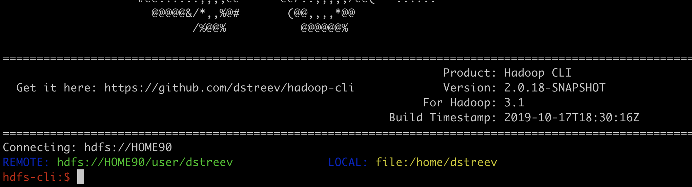
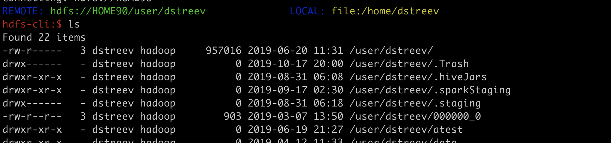
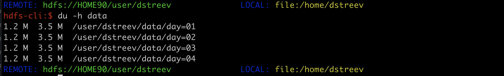

The Hadoop CLI
A quick tour of the installation and basic usage.

Slide Controls
- Next:
Right ArroworSpace - Previous:
Left Arrow - Start:
Home - Finish:
End - Overview:
Esc - Speaker notes:
S - Fullscreen:
F - Zoom:
Alt(Option) + Click
What is the Hadoop-CLI?
It is the missing CLI for HDFS.
Launch a session and benefit from an interactive CLI experience (like your local filesyste) against HDFS.
It does ‘tab’ completion, has location ‘context’, supports ‘most’ hdfs commands, and has a few ‘nice surprises’.
Where to Find it
Installation
- Download the latest
tar.gzfrom Releases- See the ‘Assets’ associated with a release and downland.
Run the installation as
rootorsudoto allow it to create and install global links.wget <release-link-from-asset-section> tar xvfz hadoop.cli-<version>-3.1.tar.gz cd hadoop-cli-3.1 sudo ./setup.sh
That’s it. I’m making an assumption you have java 8 on the host.
Start-up
cd # to return to your home directory
hadoopcli # It will be in the global path for most standard configurations

Let’s try a simple command
ls
Notice how way didn’t specify a full path (or any path) for ls

And with a ‘relative’ reference
du -h data
The path for du -h is relative (no preceeding ‘/’)

Context Aware
Both HDFS and the Local Filesystem are accessible. HDFS is considered the primary, meaning that standard commands will be applied to it.
Context is tracked for each file system, so commands without a preceeding ‘/’ will append to the current location.
Need Help
Get a complete command reference with:
help
Get command help with:
help <command>
Environment Details
- This is a valid HDFS client, using Hadoop-HDFS libraries. All permissions are applied to the user as if they were using
hdfs dfs -<cmd> ... - By default, the application will look for configurations in
/etc/hadoop/conf. It requireshdfs-site.xmlandcore-site.xmlfrom your cluster. - Security is applied the same way as if using
hdfs dfs. Via ‘os username’ or ‘kerberos’. Get a Kerberos ticket before starting the cli.
Environment Details (cont.)
Support for alternative configs(location) via commandline parameter
hadoopcli --config <alt-location>
Feedback
I’m always looking for feedback to make it better.
If you find an issue, log it on my project issues page
If you think of an enhancement, please log it on my project issues page as well.